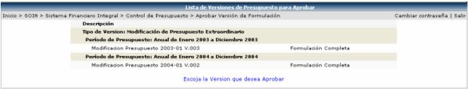
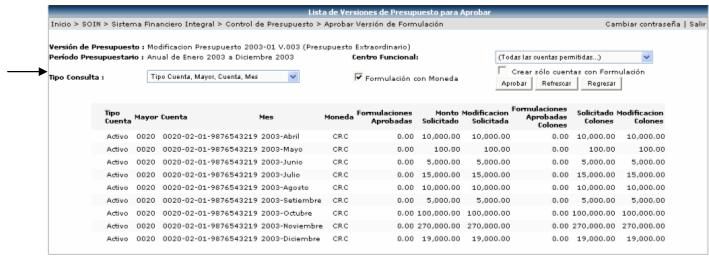
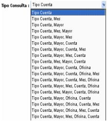
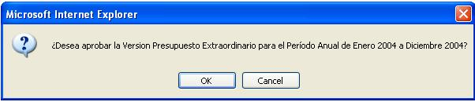
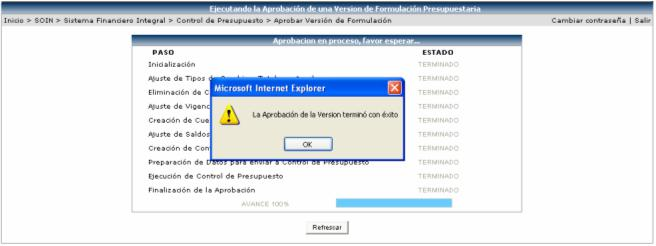

Los registros que aquí se presentan son los que se han creado con anterioridad en la opción: Versiones de Formulación de Presupuesto, que tengan asociada la etapa final y que hayan tenido o no ajustes en la opción de Versión de Formulación Final:

Una vez seleccionada la versión que se desea aprobar, se muestra el detalle de la misma, pero primero se debe de seleccionar el tipo de consulta para desplegar la información:

Tipo Consulta: aquí el usuario puede escoger la información que desee observar en pantalla, entre una serie de datos, como los siguientes:

Formulación con Moneda: el sistema por default muestra chequeada esta opción, permitiéndole al usuario observar los montos presupuestados en las diferentes monedas que se haya creado el presupuesto, para una misma cuenta. Si se desactiva este check, se mostrará el total del presupuesto en la moneda del periodo.
Crear solo cuentas con formulación: si se activa este check, el sistema seleccionará las cuentas que tienen formulación.
Para aprobar la versión se presupuesto se
presiona el botón  y el sistema le desplegará un mensaje
como el siguiente:
y el sistema le desplegará un mensaje
como el siguiente:

Si se presiona el botón de OK, se muestra proceso de la aprobación, tal y como se presenta en la siguiente pantalla:
